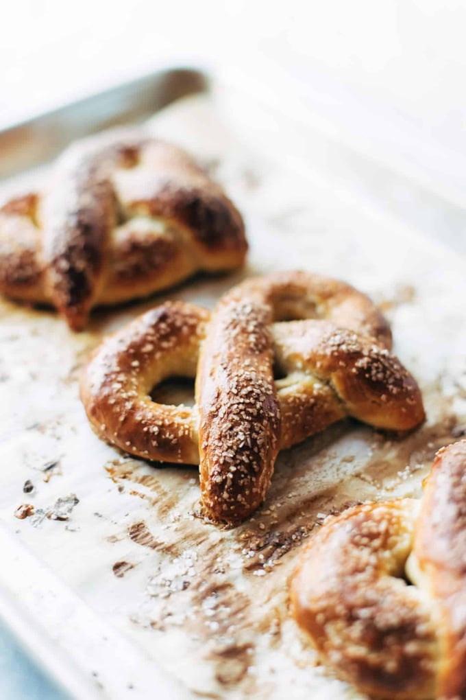

Basic Soft Pretzels

Description
Basic Soft Pretzels! Necessary dippers for your beer cheese soup ♡
Total time: 1 hour 15 minutes
Ingredients
- 1 cup warm milk
- 1 package instant yeast
- 3 tablespoons brown sugar
- 2 tablespoons melted butter
- 1 teaspoon salt
- 2 1/4 cups all-purpose flour
- more flour for dusting
Steps
- Make the Dough: In a mixing bowl, gently whisk the warm milk, yeast, brown sugar, butter, and salt. Stir in the flour until a dough forms. Transfer the dough to a floured surface and knead 10-15 times.
- Let the Dough Hang Out: Return to the bowl and drizzle with a little oil to prevent sticking. Cover with a cloth or plastic wrap and set aside for an hour to rise.
- Pretzel-ify: When the dough has risen, punch it back down and divide it into 6-8 sections. Roll each section into a loooong skinny rope. Fold it into a pretzel. Dip into the baking soda solution and place on a parchment-lined baking sheet.
- Bake: Brush with the beaten egg and sprinkle with salt. Bake at 450 degrees for 10-12 minutes, until golden brown. YUUUUUM! Dip in cheese sauce, mustard, or my personal favorite – beer cheese soup.